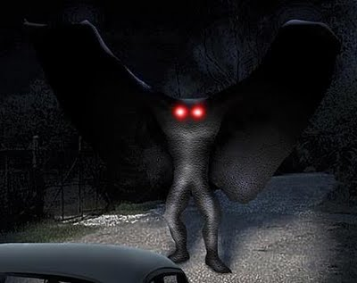
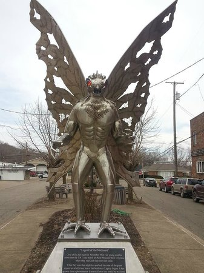
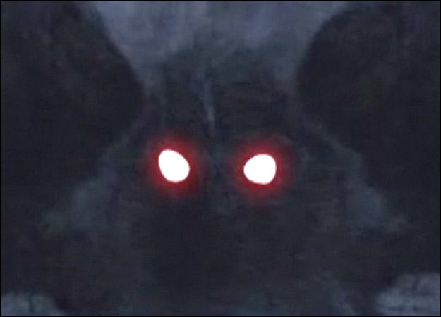

On November 12, 1966, five men who were digging a grave at a cemetery near Clendenin, West Virginia, claimed to see a man-like figure fly low from the trees over their heads. This is often identified as the first known sighting of what became known as the Mothman.
Shortly thereafter, on November 15, 1966, two young couples from Point Pleasant, Roger and Linda Scarberry and Steve and Mary Mallette, told police they saw a large grey creature whose eyes "glowed red" when the car headlights picked it up. They described it as a "large flying man with ten-foot wings", following their car while they were driving in an area outside of town known as "the TNT area", the site of a former World War II munitions plant.
During the next few days, other people reported similar sightings. Two volunteer firemen who sighted it said it was a "large bird with red eyes". Mason County Sheriff George Johnson commented that he believed the sightings were due to an unusually large heron he termed a "shitepoke". Contractor Newell Partridge told Johnson that when he aimed a flashlight at a creature in a nearby field its eyes glowed "like bicycle reflectors", and blamed buzzing noises from his television set and the disappearance of his German Shepherd dog on the creature. Wildlife biologist Dr. Robert L. Smith at West Virginia University told reporters that descriptions and sightings all fit the sandhill crane, a large American crane almost as high as a man with a seven-foot wingspan featuring circles of reddish coloring around the eyes, and that the bird may have wandered out of its migration route. This particular crane was unrecognized at first because it was not native to this region.
After the December 15, 1967, collapse of the Silver Bridge and the death of 46 people, the incident gave rise to the legend and connected the Mothman sightings to the bridge collapse.
In 2016, WCHS-TV published a photo purported to be of Mothman taken by an anonymous man while driving on Route 2.[13] Science writer Sharon A. Hill proposed that the photo showed "a bird, perhaps an owl, carrying a frog or snake away" and wrote that "there is zero reason to suspect it is the Mothman as described in legend. There are too many far more reasonable explanations.”
  